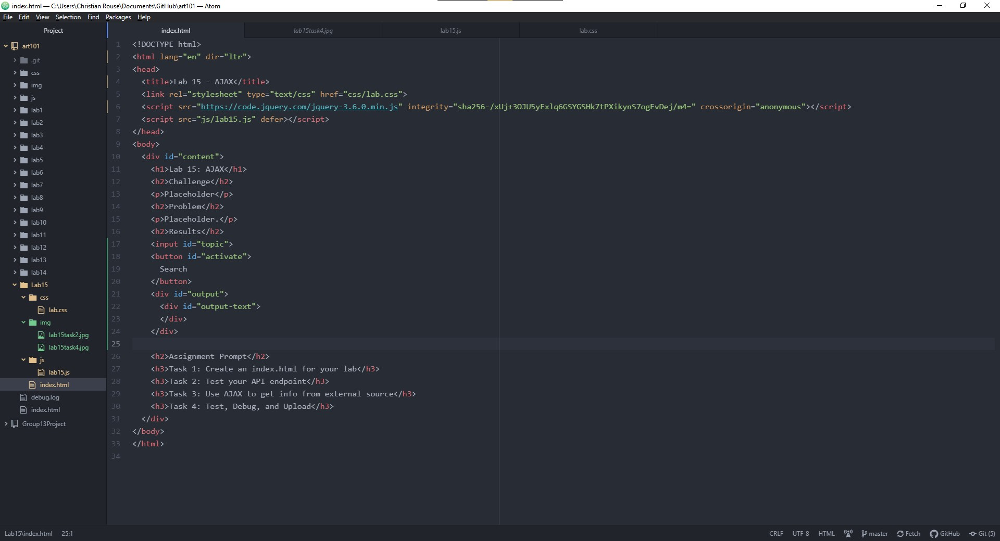
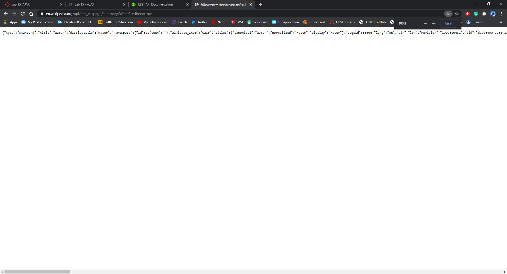
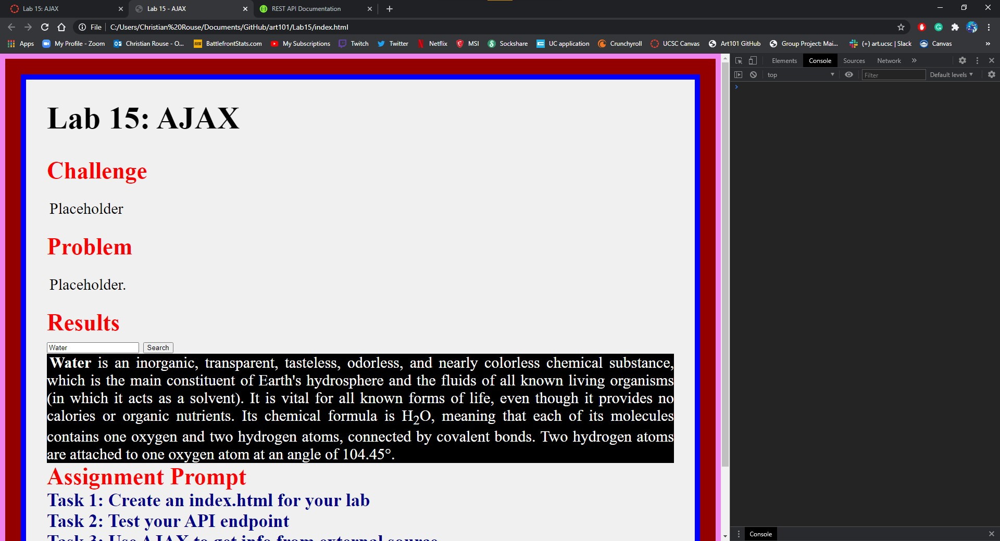
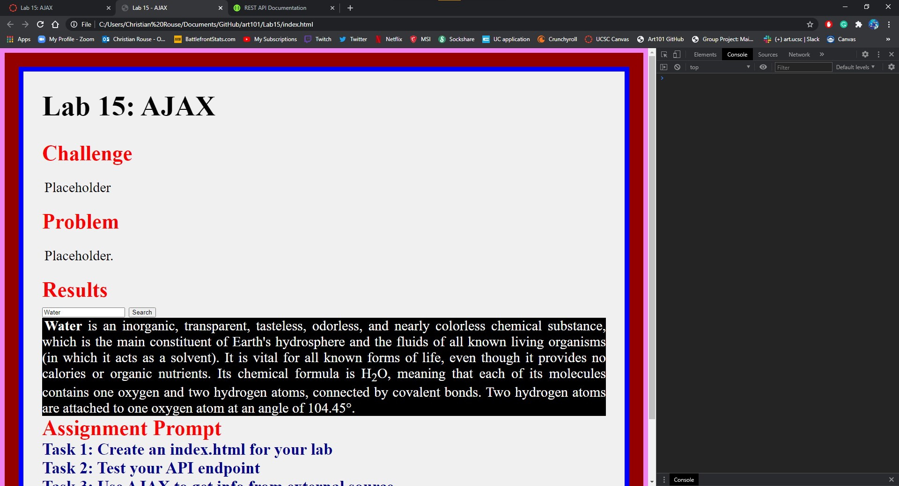
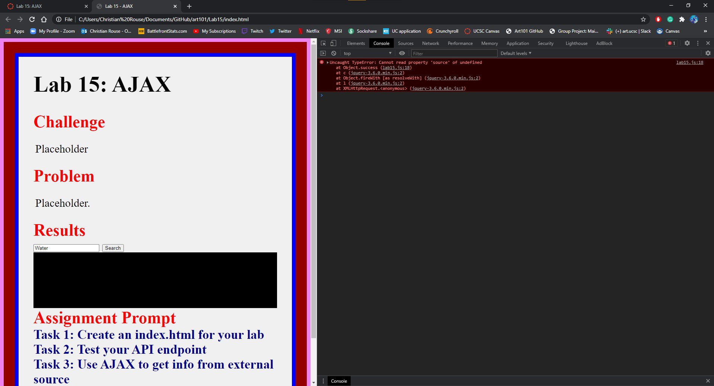

Lab 15: AJAX
Challenge
The challenge in this lab is to use a compatible code using sources from a third party to draw information from them, similar to a search engine.
Problem
Aside from some typos, there were no real issues. However, when trying to implement a way to display an image in the output of whatever was searched, I could not seem to find why the image source was undefined. Either it would result in the code not executing at all, or it would display an icon for a blank image. I decided to just omit this feature until I could figure out what was going on.
Results
Assignment Prompt
Task 1: Create an index.html for your lab
Task 2: Test your API endpoint
Task 3: Use AJAX to get info from external source
 

Task 4: Test, Debug, and Upload
This is an example of the image code that was not getting caught. This was out of my understanding as to what was going on. Multiple adjustment and iterations showed no results.
